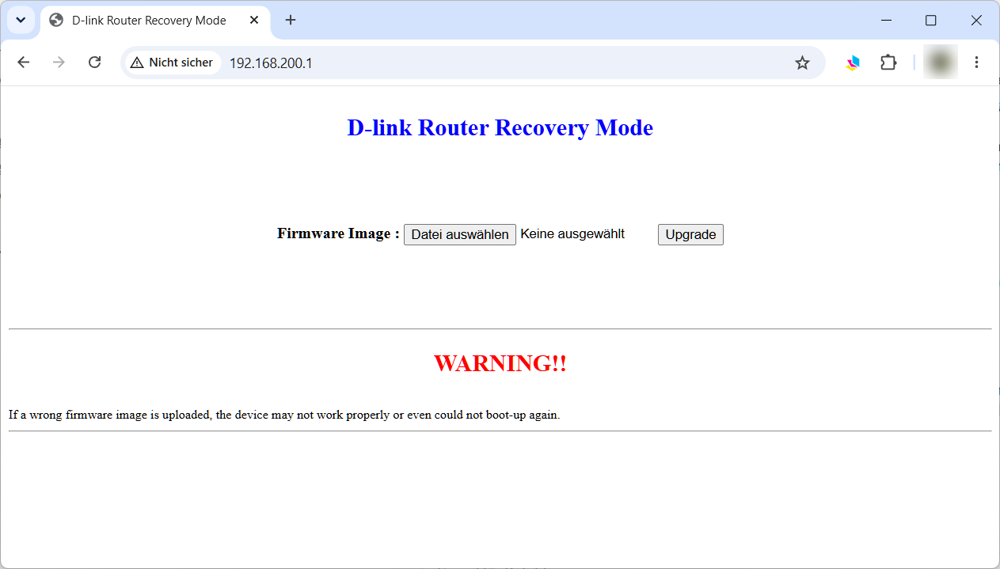

Dateien bereitlegen. Lade die RAMpe-Datei und das sysupgrade-Image herunter und leg sie in einen Ordner, den du wiederfindest, zum Beispiel "Downloads".
Feste Adresse am Rechner. Stell den Netzwerkanschluss deines Rechners
auf die feste Adresse 192.168.200.66 mit der Netzmaske
255.255.255.0. Ein Gateway brauchst du nicht. Wie das geht, steht unter
Feste IP-Adresse einstellen.
Kabel stecken. Verbinde den Rechner mit dem Router, und zwar mit einer der LAN-Buchsen, nicht mit WAN. Der Router hat noch keinen Strom.
Router in die Recovery bringen. Drück mit der Büroklammer die Reset-Taste und halte sie gedrückt. Steck jetzt den Strom ein und halte die Taste weiter, bis die LED rot blinkt. Dann loslassen. Nur die Reset-Taste führt in die Recovery, keine der anderen Tasten. Ein orangefarbenes Auf- und Abdimmen ist nicht die Recovery. Dann Strom ab und noch einmal.
Prüfen, ob die Recovery da ist.
Öffne im Browser http://192.168.200.1. Es erscheint eine schlichte Seite
"D-link Router Recovery Mode".
Lade dort nichts hoch. Ihr Fortschrittsbalken läuft nur nach der Uhr
und sagt nichts darüber, ob die Datei ankam. Die Seite zeigt dir nur, dass
die Recovery bereit ist.
Kommt stattdessen eine aufwendigere Seite, die nach einem Passwort fragt,
ist das die normale D-Link-Firmware, nicht die Recovery: zurück zu
Schritt 4.
Ein ping hilft hier nicht, die Recovery antwortet nicht darauf.

Datei mit curl hochladen. Öffne ein Terminal (unter Windows die Eingabeaufforderung "cmd"), wechsle in den Ordner mit der Datei und gib ein:
Linux und macOS:
curl -H "Expect:" -w "HTTP %{http_code}, hochgeladen %{size_upload} Bytes\n" -o /dev/null -F "firmware=@gluon-rampe-20261015-d-link-aquila-pro-ai-m60-a1-recovery.bin;type=application/octet-stream" http://192.168.200.1/upload.cgi
Windows (cmd):
curl.exe -H "Expect:" -w "HTTP %{http_code}, hochgeladen %{size_upload} Bytes\n" -o NUL -F "firmware=@gluon-rampe-20261015-d-link-aquila-pro-ai-m60-a1-recovery.bin;type=application/octet-stream" http://192.168.200.1/upload.cgi
Den echten Dateinamen statt gluon-rampe-20261015-d-link-aquila-pro-ai-m60-a1-recovery.bin einsetzen. Für die
PowerShell sieht der Befehl etwas anders aus, siehe
curl benutzen.
Warten. curl überträgt die Datei und wartet dann weiter, während die Recovery schreibt. Die LED bleibt dabei wie in Schritt 4. Bis zum Neustart vergehen meist knapp 2 Minuten, es kann aber auch über 10 Minuten dauern. Nicht abbrechen, Strom nicht ziehen. Am Ende zeigt curl, wie viel ankam. Geklappt hat es bei etwa 52,4 Millionen Bytes. Steht da 0, kam nichts an (siehe "Wenn etwas schiefgeht").
Die RAMpe. Nach dem Neustart blinkt die LED gleichmäßig, etwa einmal pro Sekunde. Stell den Rechner
wieder auf "automatisch" (DHCP) und öffne http://192.168.1.1. Es
erscheint die Seite "Firmware aktualisieren".
Die RAMpe bleibt auf dem Router, bis die Freifunk-Firmware sie ersetzt.
Startet der Router zwischendurch neu, ist das harmlos: Seite einfach
wieder aufrufen.
Zeigt der Browser stattdessen eine Warnung vor einem unsicheren
Zertifikat, hat er von sich aus https:// vor die Adresse gesetzt. Klick
auf "Erweitert" und "Trotzdem fortfahren" (je nach Browser etwas anders
benannt), dann kommt die Seite. Mehr dazu unter
Browser macht https daraus.

Freifunk-Firmware hochladen. Wähl das sysupgrade-Image deiner Community aus und klick "Datei hochladen". Die RAMpe zeigt die Prüfsumme (SHA256) der Datei. Vergleich sie mit der Prüfsumme, die deine Community zur Datei angibt. Stimmt sie, klick "Fortfahren".

Danach erscheint der Hinweis, dass die Firmware jetzt geschrieben wird. Jetzt den Strom nicht unterbrechen.

Fertig. Nach unter 2 Minuten startet die Freifunk-Firmware
deiner Community: je nach Community zuerst mit einer Einrichtungsseite
unter http://192.168.1.1 oder gleich im Betrieb. Wie es weitergeht,
beschreibt deine Community.